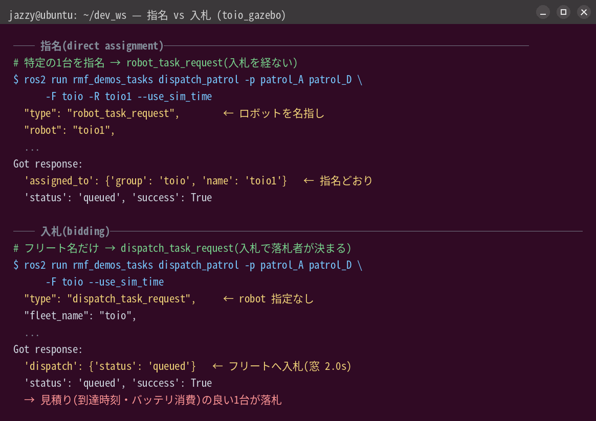

章5: 2台と入札(bidding)
狙い
- フリート処理の核心その1 ── 誰にタスクをやらせるか(タスク割当)を、RMFが入札で決める様子を観察する
- 「指名(直接割当)」と「入札」の違いを、意図して作った状況で見分ける
- 入札のパラメータ
bidding_time_windowの役割を知る
ここまで「どちらか1台が動く」と流していた部分を、いよいよ開ける。
入札の仕組み(概念)
タスクをフリート名だけで(ロボットを指名せず)投げると、RMFはオークションを開く:
- ディスパッチャがフリートへBidNotice(入札依頼)を配る
- フリートアダプタが各ロボットについて「自分がやるといつ着く? バッテリはどれだけ減る?」を見積もり、BidResponse として返す
- ディスパッチャは見積もりの良い(コストの低い)応答を落札させ、そのロボットに
task_idを割り当てる
つまり「一番安く実現できるロボットが勝つ」。空いていて・近くて・バッテリに余裕のあるロボットが有利になる。
このパッケージのフリートは toio 1つで、その中に toio1 / toio2 の2台。入札はこの2台の間で行われる。
動かす・観察する
実験1: 距離で勝者を作る
入札には距離が効く。まず2台をわざと離れた位置に置く。片方だけ先に動かしておく:
# toio1 を patrol_D 付近へ寄せておく(指名して移動)
ros2 run rmf_demos_tasks dispatch_go_to_place -p patrol_D -F toio -R toio1 --use_sim_time
toio1が patrol_D に着いて落ち着いたら、指名せずに patrol_D 近くの仕事を入札に出す:
# フリート名も付けず、純粋に入札させる
ros2 run rmf_demos_tasks dispatch_patrol -p patrol_D patrol_B -n 1 --use_sim_time
観察: 近くにいるtoio1が落札するはず。端末Aの rmf_task_dispatcher ログで、2台ぶんのBidResponseが並び、コストの低い方(toio1)が選ばれる様子を読む。
Note
A4実機では、この「先に片方を寄せる」手順は成立しない(寄せた直後に finishing_request で帰ってしまう)。A4では目的地を変えて勝者が入れ替わるのを見る手順に読み替える → 章13。
実験2: 指名して入札を飛ばす
同じ状況で、今度はわざと遠い方を指名する:
ros2 run rmf_demos_tasks dispatch_patrol -p patrol_D patrol_B -n 1 -F toio -R toio2 --use_sim_time
観察: 近くにtoio1がいても、指名したtoio2が動く。ログに入札(BidNotice/ BidResponse)が現れないことを確認する ── これが直接割当(robot_task_request)。指名は「安い方が勝つ」という原則を上書きする。
CLIの応答を見ると、指名と入札の違いがはっきり出る。-R 付き(指名)は robot_task_request で、応答に assigned_to がそのまま入る。-R 無し(入札)は dispatch_task_request になり、フリートへ入札に回る:

上: 指名(robot_task_request → assigned_to: toio1)。下: 入札(dispatch_task_request → フリートが落札者を決める)。toio_gazeboでの実出力。
実験3: 入札の締め切りを見る
入札は無限には待たない。bidding_time_window(既定2.0秒)の間だけ応答を受け付け、締め切ってから落札する。値を変えて起動すると挙動が変わる:
# 端末A を一度落として、入札窓を長めにして起動し直す
ros2 launch toio_rmf_bringup toio_rmf.launch.py mat:=a3 run_sim:=true use_sim_time:=true \
bidding_time_window:=5.0
タスク投入から落札までの間(ログのBidNotice→落札の時間差)が延びる。2台程度なら体感差は小さいが、「入札には締め切りがある」という設計を押さえる意味で一度触っておくとよい。
理解する
- タスク割当は入札で決まる。RMFのマルチロボット運用の土台がこれ。ロボットを増やしても仕組みは同じで、一番安く実現できる1台が選ばれる。
- 見積もりの中身は到達時刻とバッテリ消費。だから入札の結果は「今どこにいるか」「バッテリはどれだけあるか」で変わる ── 章7の充電状態とも絡む(バッテリの減ったロボットは不利になりうる)。
- 指名は入札を上書きする運用の逃げ道。「この1台を確実に」なら
-F -R。デモや検証で特定の1台を動かしたいときに使う。実機の1台ずつ検証(→章12)でも重宝する。 - 落札後にロボットが実際にどう走るかは、ここまでの章2・3のとおり(アダプタ→Nav2)。入札は「走らせる前の意思決定」で、走り出したら次章の交通調停の世界に入る。
確認課題
- 2台を離して配置し、近い方が落札することをログで確認する(実験1)。次に配置を入れ替えて、勝者が入れ替わることも見る。
- 実験2で、指名したときにログから入札が消えることを確認する。「指名 = 入札しない」を自分の言葉で説明できるか。
- 片方(例:toio1)に長いpatrol(
-n 5)を先に投げて塞いでおき、その最中に指名なしで別のタスクを投げてみる。今度は空いているtoio2が落札するはず ── 「空いている方が安い」を体感する。
Note
A4実機で2台を続けて走らせるときの安全な間隔(30秒以上空ける、1台目が向かっていない頂点を指定する)は章13で扱う。
「誰がやるか」が決まったら、2台が同時に走り出したとき道をどう分け合うか ── 交通調停へ進む。